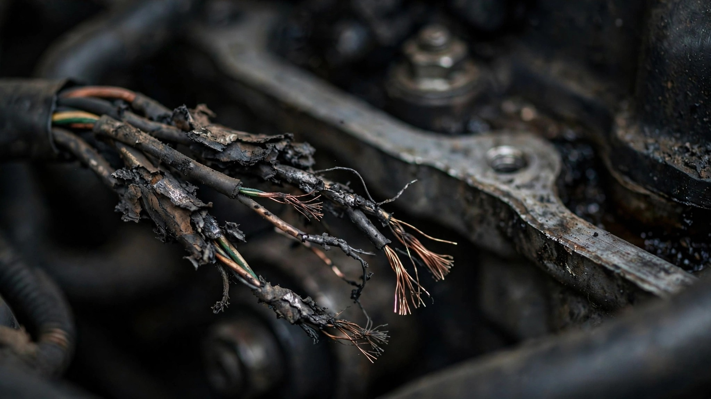

Ford Has the Same Wiring Fire Problem in Three Different Trucks. Nobody's Calling It a Pattern.

On Friday morning, NHTSA posted Ford's latest fire recall: 565,691 Broncos and Bronco Raptors, model years 2021 through 2026, because wiring harnesses in the engine compartment rub against surrounding components until they short-circuit and ignite.[1] Fifteen fires confirmed so far. No injuries. Dealers will add protective sheathing. Standard recall boilerplate.
Except three months ago, Ford recalled 140,201 Rangers for a wiring harness fire in the A-pillar.[2] The sun visor wire was wrapped in tape that was too thick, wedging the harness into a metal opening. Wire-on-metal contact. Arcing. Soot buildup. Eventually, fire. Ford's Critical Concern Review Group opened the investigation in November 2025 after a 2024 Ranger burst into flames. Ford's engineers identified the cause in October 2025. Six months passed before the recall landed in April 2026.
Two recalls. Two different vehicle lines. Two different locations in the vehicle (engine compartment vs. A-pillar). Identical root cause: Ford ran wires near metal, didn't protect them well enough, and physics did the rest.
If this sounds familiar, you've been reading NHTSA bulletins longer than most. Between 2004 and 2015, Ford recalled over 14 million trucks and SUVs because a cruise control deactivation switch leaked brake fluid, corroded, and caught fire.[3] The 2005 installment of that campaign alone covered 4.5 million vehicles. It was the fourth-largest recall in U.S. history. The fix? Install a fused wiring harness to prevent the fluid from reaching anything it could ignite. Ford stopped using the switch in 2003. They were still recalling vehicles with it a decade later.
Nobody aggregates it. That's the pattern's camouflage. Each recall is reported as an isolated event: "Bronco fire recall." "Ranger wiring recall." Filed, covered for one news cycle, forgotten. Add the numbers up and Ford has recalled 705,892 vehicles for wiring-related fire risk in the first seven months of 2026. By April, Ford's total recall count had hit 33 separate campaigns affecting over 7 million vehicles, triple its nearest competitor.[4]
The Ranger's FARS fatality rate helps put the fleet in context. At 2.91 deaths per 100 million vehicle miles traveled, it's nearly three times the F-150's rate of 1.04.[5] The Bronco's rate is too young for meaningful comparison (25 deaths across FARS 2014-2023, with most of that window preceding the modern Bronco's 2021 relaunch). The Explorer, also in recall territory for unrelated seat defects, sits at 1.54. These are all-cause fatality rates, not fire-specific. But they establish that two of the three vehicle lines Ford is currently recalling for fire risk are already overrepresented in the mortality data.
Ford's defenders will argue that high recall volume signals transparency, not poor quality. That finding problems and reporting them to NHTSA is what responsible manufacturers do. Fair enough. But the counterargument assumes each recall is a new, unrelated defect. When the root cause is functionally identical across platforms, "we found another one" stops being reassuring and starts being an admission that the design review process isn't catching the failure mode before production.
The Bronco's engine compartment harness. The Ranger's A-pillar harness. The cruise control switch's brake fluid pathway. Wire-on-metal, insufficient protection, eventual fire. Ford keeps building the same mistake into different vehicles and then recalling them one nameplate at a time, so nobody notices the pattern is one problem wearing 14 million different VINs.
What to do: If you own a 2021-2026 Bronco or Bronco Raptor, a 2024-2026 Ranger, or a 2020-2026 Explorer, check your VIN at nhtsa.gov/recalls. Bronco owners can get the fix now. The Ranger fix (BCM software update plus wiring inspection) is rolling out through late July for 2024 models. Don't wait for the letter.
Sources & References
- Reuters, “Ford to recall more than 565,000 US vehicles over engine compartment fire risk,” July 24, 2026. reuters.com
- Reuters, “Ford to recall over 140,000 US vehicles over damaged wires,” April 22, 2026. reuters.com
- ENR, “In Ford Recall of 4.5 Million Trucks and SUVs, Dangers Are Blamed on ‘System Interaction,’” 2005. enr.com
- Carscoops, “A Sun Visor Set A Ford Ranger On Fire, And Now 140,000 Are Recalled,” April 2026. carscoops.com
- NHTSA, Fatality Analysis Reporting System (FARS), 2014–2023. nhtsa.gov
Source: NHTSA FARS 2014–2023 for fatality rates; NHTSA recall database for recall counts and details. FARS fatality rates are all-cause and estimated using VMT projections, introducing ±15% uncertainty for lower-volume models. Bronco FARS data is largely pre-2021-relaunch and does not reflect the current generation’s crash profile. See methodology for caveats.